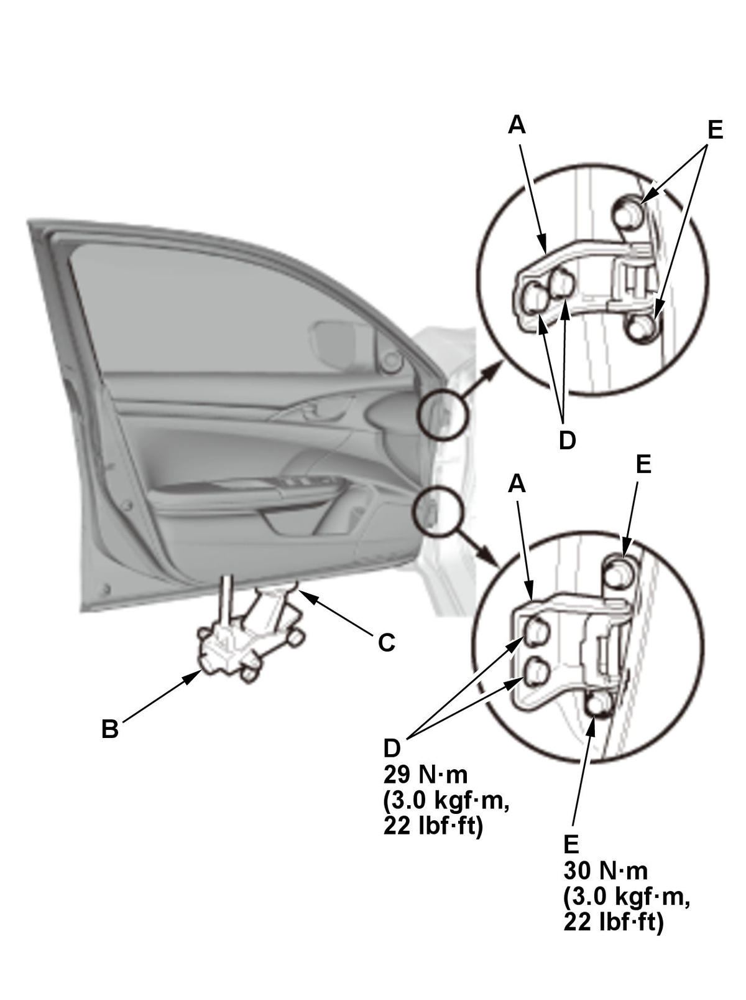
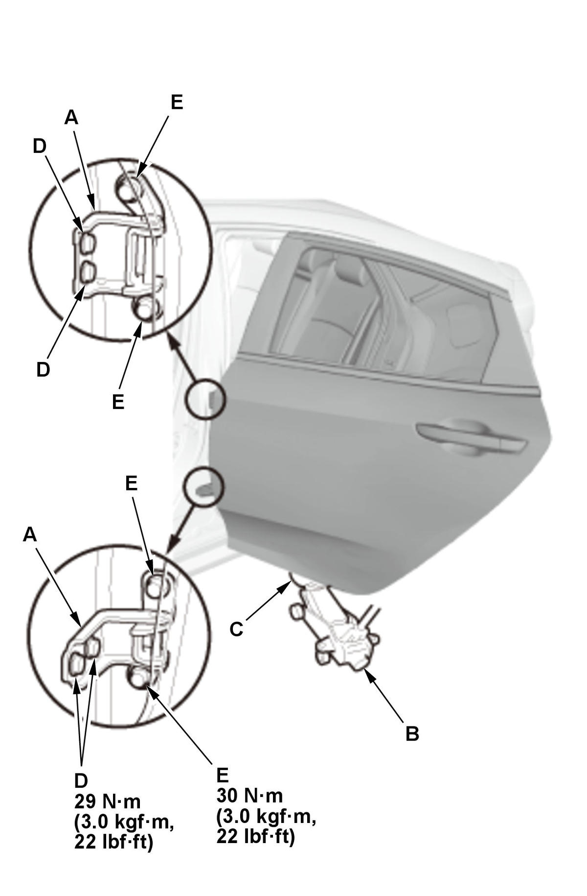

Door Position Adjustment: Adjustment
NOTE: Check for a flush fit with the body, then check for equal gaps between the front door and the rear door, and between the doors and the body. Check that the door and body edges are parallel.
- Front Fender Fairing - Remove
- Door Position - Adjust

Courtesy of HONDA, U.S.A., INC.
Courtesy of HONDA, U.S.A., INC.NOTE: Place the vehicle on a firm, level surface when adjusting the doors. 1. Adjust at the hinges (A):
- Pad the floor jack (B) with the shop towel (C), then use the jack to support the door while adjusting it.
- Loosen the hinge mounting bolts (D) slightly, and move the door backward or forward, up or down as necessary to equalize the gaps.
2. If necessary, replace the door mounting bolts with the adjusting bolts made specifically for door adjustment, then adjust at the door: Loosen the door mounting bolts (E) slightly, and move the door up or down as necessary to equalize the gaps, and move it in or out until it is flush with the body.
NOTE: Refer to the Parts Catalog if you need use an adjusting bolt.
3. Check that the door and body edges are parallel. If necessary, adjust the door cushions (A) to make the rear of the doors flush with the body. 4. Make sure the door opens without popping or binding and latches securely without slamming. If not, adjust the door striker .
5. Apply touch-up paint to the hinge mounting bolts and around the hinges.
- Front Fender Fairing - Install
- Water Leaks - Check
- LaneWatch Camera - Aim (With LaneWatch)